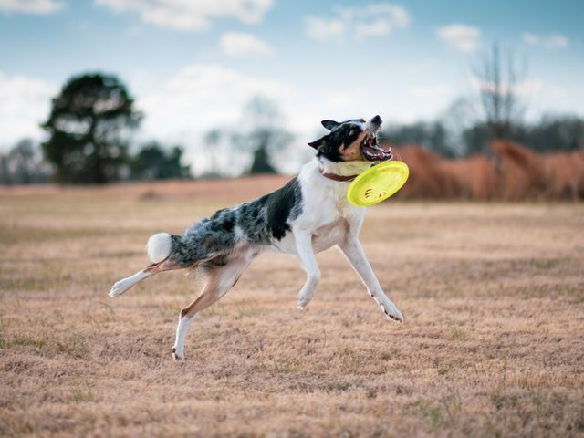
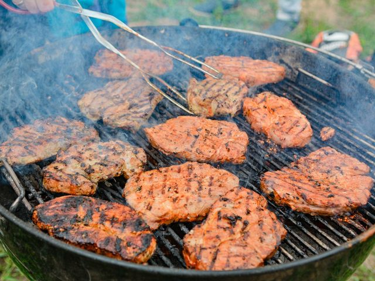
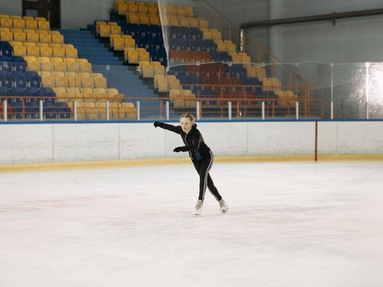
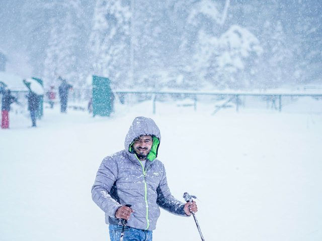
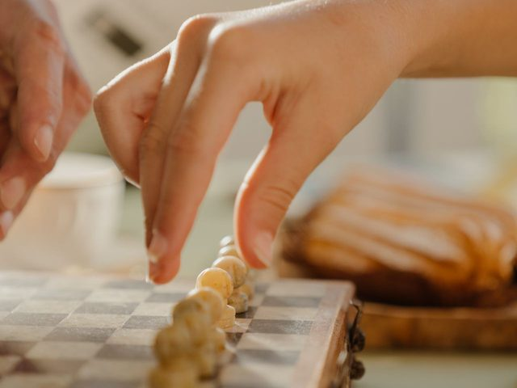
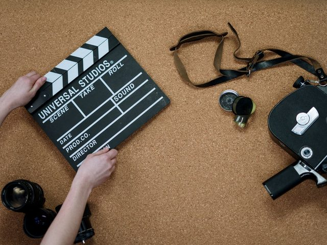
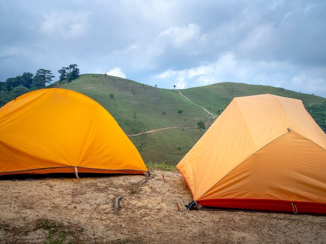

UNIT 14 · VOCABULARY
運動、興趣與嗜好
Sports, interests & hobbies
30 個單字聽・唸・用
本單元單字一覽
球類、戶外活動、音樂、休閒嗜好，共 30 個。球類用 play（play golf），活動用 go + V-ing（go bowling、go skiing），樂器用 play the（play the flute）。
balldodgeballfootballfrisbeegolfsoftballtable tennisvolleyballbarbecuebowlingroller skatesailingskateskitravelcartoonchesscomputer gamedramafilmfluteinstrumentjazznovelpop musicpuzzletenttrumpetloserwinner
每個字都有 🔊，先聽發音、跟著唸，再看例句。
單字 1–4

ball
球；舞會n.
The dog ran after the ball.
那隻狗追著球跑。
那隻狗追著球跑。

dodgeball
躲避球n.
We played dodgeball in P.E. class today.
我們今天體育課玩躲避球。
我們今天體育課玩躲避球。
football
美式足球；（英式）足球n.
American football players wear helmets.
美式足球員戴頭盔。
美式足球員戴頭盔。

frisbee
飛盤n.
My dog can catch a frisbee in the air.
我的狗能在空中接住飛盤。
我的狗能在空中接住飛盤。
單字 5–8

golf
高爾夫球n.
Grandpa plays golf every Saturday.
爺爺每個星期六打高爾夫球。
爺爺每個星期六打高爾夫球。

softball
壘球n.
Softball is like baseball, but the ball is bigger.
壘球很像棒球，但球比較大。
壘球很像棒球，但球比較大。

table tennis
乒乓球；桌球n.
Let's play table tennis after school.
放學後我們來打桌球吧。
放學後我們來打桌球吧。

volleyball
排球n.
We play beach volleyball in summer.
我們夏天打沙灘排球。
我們夏天打沙灘排球。
單字 9–12

barbecue
烤肉n. / v.
Many families have a barbecue at the Moon Festival.
很多家庭中秋節烤肉。
很多家庭中秋節烤肉。

bowling
保齡球n.
We went bowling on Friday night.
我們星期五晚上去打保齡球。
我們星期五晚上去打保齡球。

roller skate
溜輪式溜冰；輪式溜冰鞋v. / n.
The kids roller skate in the park.
孩子們在公園溜輪式溜冰。
孩子們在公園溜輪式溜冰。

sailing
航行；帆船運動n.
We went sailing on the lake last summer.
去年夏天我們去湖上玩帆船。
去年夏天我們去湖上玩帆船。
單字 13–16

skate
溜冰；溜冰鞋v. / n.
Can you skate on ice?
你會溜冰嗎？
你會溜冰嗎？

ski
滑雪；滑雪板v. / n.
We went skiing in Japan last winter.
我們去年冬天去日本滑雪。
我們去年冬天去日本滑雪。

travel
旅行v. / n.
I want to travel around the world.
我想環遊世界。
我想環遊世界。

cartoon
卡通；漫畫n.
My little brother watches cartoons on Saturday mornings.
我弟弟星期六早上看卡通。
我弟弟星期六早上看卡通。
單字 17–20

chess
西洋棋n.
Grandpa taught me how to play chess.
爺爺教我下西洋棋。
爺爺教我下西洋棋。

computer game
電腦遊戲n.
Don't play computer games for too long.
不要玩電腦遊戲太久。
不要玩電腦遊戲太久。

drama
戲劇；戲劇性事件n.
I joined the drama club this year.
我今年加入了戲劇社。
我今年加入了戲劇社。

film
電影；底片n.
This film is about a brave girl.
這部電影在講一個勇敢的女孩。
這部電影在講一個勇敢的女孩。
單字 21–24

flute
長笛；笛子n.
She plays the flute in the school band.
她在學校樂隊吹長笛。
她在學校樂隊吹長笛。

instrument
樂器；儀器n.
Can you play any musical instruments?
你會彈奏任何樂器嗎？
你會彈奏任何樂器嗎？

jazz
爵士樂n.
The café plays soft jazz music.
那家咖啡館播放輕柔的爵士樂。
那家咖啡館播放輕柔的爵士樂。

novel
小說n.
Harry Potter is a famous novel series.
《哈利波特》是有名的系列小說。
《哈利波特》是有名的系列小說。
單字 25–28

pop music
流行音樂n.
Many teenagers like Korean pop music.
很多青少年喜歡韓國流行音樂。
很多青少年喜歡韓國流行音樂。

puzzle
拼圖；謎題；使困惑n. / v.
We finished a 1,000-piece puzzle together.
我們一起完成了一千片的拼圖。
我們一起完成了一千片的拼圖。

tent
帳篷n.
We put up a tent by the river.
我們在河邊搭了帳篷。
我們在河邊搭了帳篷。

trumpet
小號；喇叭n.
He plays the trumpet very loudly.
他小號吹得很大聲。
他小號吹得很大聲。
單字 29–30

loser
輸家；失敗者n.
Don't be a bad loser. Say "Good game!"
不要輸不起，說聲「打得好！」。
不要輸不起，說聲「打得好！」。

winner
贏家；優勝者n.
The winner of the race gets a gold medal.
賽跑的優勝者得到金牌。
賽跑的優勝者得到金牌。
play、go、play the
| 用法 | 例子 |
|---|---|
| play + 球類 | play golf／volleyball／dodgeball |
| go + V-ing | go bowling／skiing／sailing |
| play the + 樂器 | play the flute／trumpet |
| play + 棋、遊戲 | play chess／computer games |
球類和棋類前面不加 the；樂器前面要加 the。
快問快答：中文 → 英文
1球；舞會ball
2躲避球dodgeball
3美式足球；（英式）足球football
4飛盤frisbee
5高爾夫球golf
6壘球softball
7乒乓球；桌球table tennis
8排球volleyball
快問快答：英文 → 中文
1barbecue烤肉
2bowling保齡球
3roller skate溜輪式溜冰；輪式溜冰鞋
4sailing航行；帆船運動
5skate溜冰；溜冰鞋
6ski滑雪；滑雪板
7travel旅行
8cartoon卡通；漫畫
學完了！接下來
複習方法
review
- 回到「📗 單字卡」，按「遮中文」自己考自己
- 再按「遮英文」，看中文說出英文
- 每個例句跟著 🔊 唸一次
準備好了
- 按右上角「📝 前往測驗」
- 測驗錯的題目要訂正到全對
- 訂正完成補送 1 點